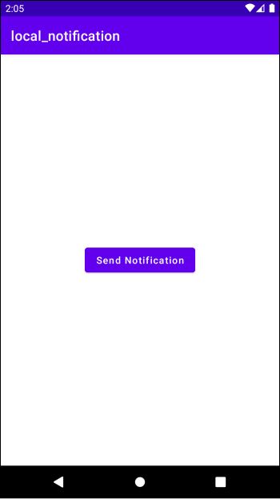

[Android] 알림(Notification) - (1) 로컬 알림
알림
알림(Notification)은 앱이 실행되고 있지 않거나 백그라운드 상태일 때 메시지를 전달하는 방법을 제공합니다. 문자 앱이나 Gmail 앱이 대표적인 알림입니다.
알림이 생성되면 화면 위쪽 상태 바에 아이콘으로 나타납니다.
상태 바를 끌어내리면 알림 패널에서 알림의 자세한 내용을 확인할 수 있습니다.
알림의 종류
알림에는 두 종류가 있습니다.
- 로컬 알림(Local Notification)
- 원격 알림(Remote Notification)
로컬 알림
로컬 알림(Local Notification)은 기기에서 실행 중인 앱에서 생성됩니다. 버튼을 누르면 로컬 알림을 전송하는 예제를 만들어봅시다.
NotificationCompat.Builder객체를 사용하면 알림을 생성할 수 있습니다. 우선 NotificationBuilder객체를 생성합니다.
1 | val notificationBuilder = NotificationCompat.Builder(this) |
setSmallIcon()메소드를 사용하면 알림의 아이콘을 설정할 수 있습니다. setContentTitle()메소드를 사용하면 알림의 제목을 설정할 수 있으며, setContentText()메소드를 사용하면 알림의 본문을 설정할 수 있습니다.
이제 NotificationBuilder객체의 build()메소드를 사용하여 알림을 생성합시다.
1 | val notification = notificationBuilder.build() |
알림을 보내기 위해서는 NotificationManager객체가 필요합니다. 시스템 서비스에서 다음과 같이 NotificationManager객체를 가져옵니다.
1 | val notificationManager = getSystemService(Context.NOTIFICATION_SERVICE) as NotificationManager |
마지막으로 NotificationManager객체의 notify()메소드를 사용하여 알람을 전송합니다. 이때 메소드의 첫 번째 인자로 알림의 ID를 나타내는 임의의 정수값을 전달합니다. 알람 ID는 안드로이드 시스템이 알림을 구분하는데 사용합니다.
1 | notificationManager.notify(NOTIFICATION_ID, notification) |
완성된 코드는 다음과 같습니다. 버튼을 누르면 알림을 전송합니다.
1 | class MainActivity : AppCompatActivity() { |
이제 앱을 실행하고 버튼을 눌러봅니다.
상단 상태 바에 알림 아이콘이 생성됩니다.
상태 바를 아래로 쓸어내리면 알림을 확인할 수 있습니다.
Oreo 버전에서의 알림
안드로이드 API 26 (Oreo)부터는 알림을 사용하는 방식이 변경되었습니다. 따라서 버전에 따른 분기처리를 해야합니다.
1 | if (Build.VERSION.SDK_INT >= Build.VERSION_CODES.O) { |
Oreo 이후 버전부터는 알림을 사용할 때 Notification Channel을 지정해야합니다.
Notification Channel
Oreo 이하 버전에서는 모든 알림이 하나의 Notification Channel로 관리됐습니다. 이 때문에 스마트폰에 알림이 쌓이길 원하지 않아 알림을 끄면, 모든 알림을 받을 수 없었습니다.
Oreo 버전부터는 알림을 여러 채널 별로 분리하여 사용자가 확인하고 싶은 알림과 보고싶지 않은 알림을 직접 설정할 수 있습니다. 각 채널별 수신 여부 외에도 잠금화면 표시 여부, 소리 설정, 진동 설정 등 여러 옵션을 세밀하게 설정할 수 있습니다.
우선 다음과 같이 NotificationChannel 객체를 생성합니다.
1 | val channelId = "channel_id" |
NotificationChannel객체를 생성할 때 사용하는 id, name, importance, description은 다음과 같습니다.
- id: 각 채널을 구분할 수 있는 고유한 값
- name: 사용자에게 표시되는 채널의 이름
- description: 채널에 대한 설명, 특정 채널 설정 창에서 표시됩니다.
- importance: 알림에 대한 중요도, 이 값에 따라 알림이 다르게 똥작합니다. importance 값에 따른 동작은 이 곳에서 확인할 수 있습니다.
Notification Manager에 채널을 등록합니다.
1 | val notificationManager = getSystemService(Context.NOTIFICATION_SERVICE) as NotificationManager |
NotificationBuilder를 생성합니다. 이 때 Builer()의 두 번째 인자로 채널의 id를 전달합니다.
1 | val notificationBuilder = NotificationCompat.Builder(this, channelId) |
Notification을 생성합니다.
1 | val notification = notificationBuilder.build() |
NotificationManager의 notify()메소드를 호출하여 알림을 전송합니다.
1 | notificationManager.notify(NOTIFICATION_ID, notification) |
전체 코드는 다음과 같습니다.
1 | class MainActivity : AppCompatActivity() { |
이제 앱을 실행하고 버튼을 클릭합시다.

다음과 같이 화면에 알림 상자가 나오며, 상태바에 알림 아이콘이 생성됩니다.
상태 바를 아래로 쓸어내리면 자세한 내용을 확인할 수 있습니다.